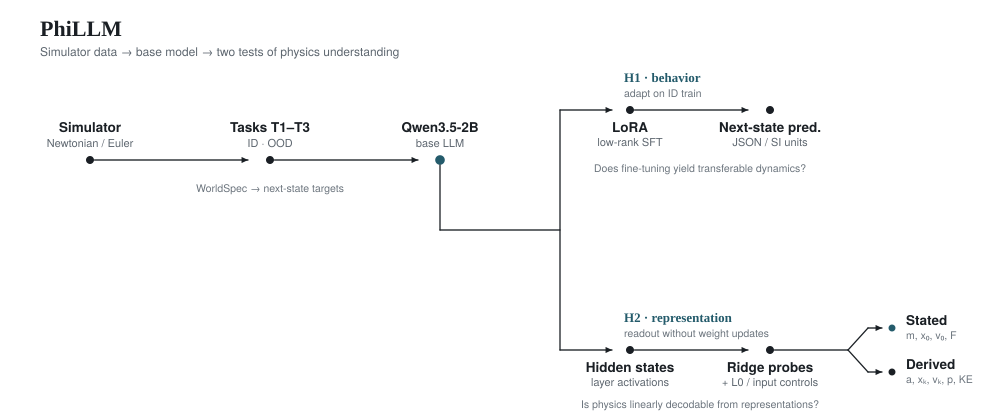
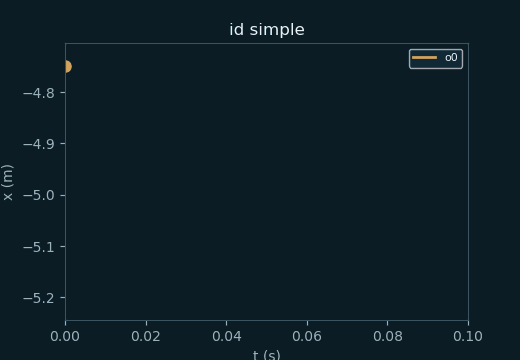
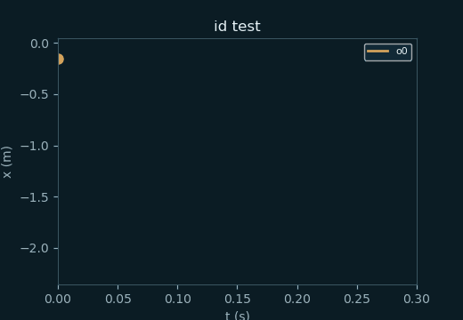
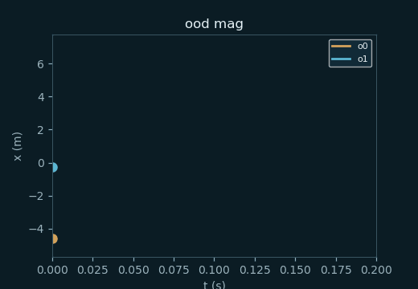
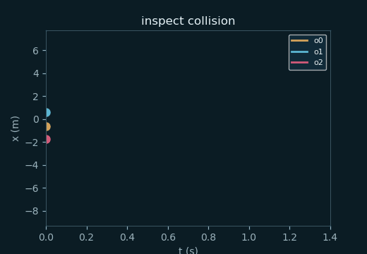

PhiLLM
Zero-shot Qwen3.5-2B mostly cannot predict Newtonian next states
(8% ID vs 100% oracle).
LoRA SFT lifts ID to 38% (MAE 13.5→0.82) but
LoRA OOD stays 0% on all four axes.
Probes: LoRA raises derived R² (momentum 0.19→0.56, vk 0.23→0.51) —
ID physics is more linearly readable, still not OOD-transferable (n=50/200).
Frozen-LLM + linear next-state head stays near chance on ID T1
(0–2% vs LoRA gen. 38%).
FREIA is a weight-encoded Newtonian law module (closed-form tensors, shuffle control → 0%):
an oracle-style upper bound at 100% exact ID T1 (32/32) and
100% ood_mag (n=50) showing those equations can live in weights.
It does not change Qwen and does not replace the LoRA
42% ID / 0% OOD language-model result.
Astra text-in/text-out (gpt-6-astra-pro, no tools) refused the full 2B linear head
(coef 2×2048, scalers, and LoRA-B 512×16). A 64-column crop parsed, but every returned number
matched the weights that were sent (max absolute difference 0). On that crop, simple-1D n=50:
ID 0% exact, pos/vel MAE 5.50/15.45;
ood_mag 0%, 11.83/35.28 — the same as the unedited crop.
Qwen was not rewritten. This does not replace 4B LoRA 42% ID / 0% OOD.
PhiLLM asks whether open-weight LLMs hold a usable internal model of simple point-mass worlds — ID vs OOD next-state prediction, linear probes for derived physics, probe-guided teaching, selective simulator calls, and a weight-space reading pilot.
One comparison table: model size × method × ID / OOD.
Metrics from Journey preds/*.metrics.json and
phillm-results.
Size sweep complete: 4B LoRA best ID (42%); 9B/27B LoRA below 2B; OOD exact 0% at all sizes.
| Model | Method | ID acc | ID Pos MAE | OOD acc | n | Notes |
|---|---|---|---|---|---|---|
| — | Oracle sim | 100% | 0.00 | 100% | 2000 | ceiling |
| Qwen3.5-0.8B | Zero-shot | 6.7% | 14.6 | — | 30 | Journey |
| Qwen3.5-2B | Zero-shot | 8% | 13.5 | 0% | 50 | all 4 OOD axes |
| Qwen3.5-2B | LoRA SFT | 38% | 0.82 | 0% | 50 | best ID so far · OOD MAE↓ |
| Qwen3.5-2B | Probe-guided | 22% | 1.06 | 0% | 50 | init-from-LoRA · < SFT |
| Qwen3.5-2B | Selective θ | 16% | ~1.2 | — | 50 | call_rate≈0 · p_sim≪θ |
| Qwen3.5-2B | Linear head | 0–2% | 0.71–1.53 | 0% | 50 | frozen LLM control |
| 2B linear head, 64-d crop (not full Qwen) | Astra text edit | 0% | 5.50 | 0% | 50 | negative · crop unchanged (0 of 1,282 entries) · ID vel MAE 15.45 · ood_mag pos/vel MAE 11.83/35.28 · same as unedited crop · full 2048-d dump refused · does not replace 4B LoRA 42%/0% · metrics · input/output |
| Qwen3.5-4B | Zero-shot | 0% | 1.99 | 0% | 30 | ID Journey · OOD mag/obj Explorer |
| Qwen3.5-4B | LoRA SFT | 42% | 0.77 | 0% | 50 | beats 2B LoRA 38% · OOD exact 0% |
| FREIA module (not Qwen) | closed-form tensors | 64% | ~0 | 100% mag | 50 | oracle-style upper bound · Qwen weights unchanged · T1 32/32 exact · ood_mag MAE ~0 · shuffled tensors 0% · T2/T3 unanswered · weights |
| Qwen3.5-9B | Zero-shot | 10% | 11.4 | 0% | 50 | A100 ID · OOD mag H100 n=20 |
| Qwen3.5-9B | LoRA SFT | 24% | 0.83 | 0% | 50 | Explorer · OOD mag/hor/obj 0% (MAE 6.7) · < 2B LoRA 38% |
| Qwen3.5-27B | Zero-shot | 3.3% | 5.21 | — | 30 | H200 |
| Qwen3.5-27B | LoRA SFT | 20% | 1.66 | 0% | 30 | H200 · OOD mag MAE 8.13 · HF 27b-lora |
Takeaway: 2B LoRA 38% still beats 9B/27B LoRA (24%/20%); 4B LoRA 42% is best among language-model runs. ZS peaks at 9B (10%). OOD exact stays 0% for ZS / LoRA / probe-guided on mag·hor·obj·col. FREIA is a weight-encoded Newtonian law module (closed-form tensors, shuffle control → 0%). It is an oracle-style upper bound (100% exact ID T1, 32/32; 100% ood_mag, n=50; mixed-slice ID 64% because T2/T3 are unanswered) that shows the equations can live in weights. It does not change Qwen and does not replace the LoRA 42% ID / 0% OOD language-model result. Astra text weight-edit is a negative result: the 64-d crop came back unchanged, scoring 0% ID / 0% ood_mag (pos MAE 5.50 / 11.83), identical to the unedited crop. The full head was refused. It does not replace 4B LoRA 42% ID / 0% OOD. LoRA still cuts Pos MAE ~4–9× vs zeroshot. Probes: derived R² momentum 0.19→0.56, vk 0.23→0.51. Selective SFT did not learn usable <sim> calling overnight.
Figure-style vignette from ID test T1_c93a1731ee56d3d3 (zeroshot Qwen3.5-2B).
Δt = 0.1 s. Predict the state after 3 steps.
Object o0: mass 1.194 kg, position −0.1574 m,
velocity −770.3 cm/s, force 12.31 N.
Return JSON {objects:[{id, position, velocity}]} in SI units.
position ≈ [−2.159] m · velocity ≈ [−4.612] m/s
position = −0.1574 · velocity = −77.03 (kept the initial position; treated cm/s as if already m/s-ish — wrong scale & no Euler step)

<sim> calling (RQ3) build on the probe path.
Worlds are 1D/2D point masses under constant forces with elastic collisions and optional walls,
stepped with fixed-Δt Euler. Each item is a natural-language WorldSpec → JSON next-state target.
ID splits cover train/dev/test; OOD axes stretch magnitude, horizon, object count, and collisions.
Models: open-weight Qwen/Qwen3.5-2B zero-shot, then LoRA SFT on train (dev-only selection).
Probes read hidden states for derived quantities; RQ3 adds a costed <sim> tool policy;
RQ5 asks an LLM to name which law a tiny neural simulator encodes from its weights.
Exact Newtonian trajectories — the “figure” half of the paper. Numbers above are the claim; these are the world.



